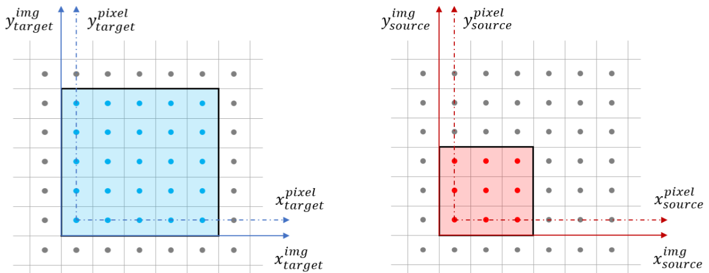
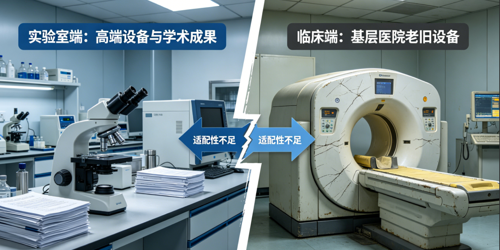
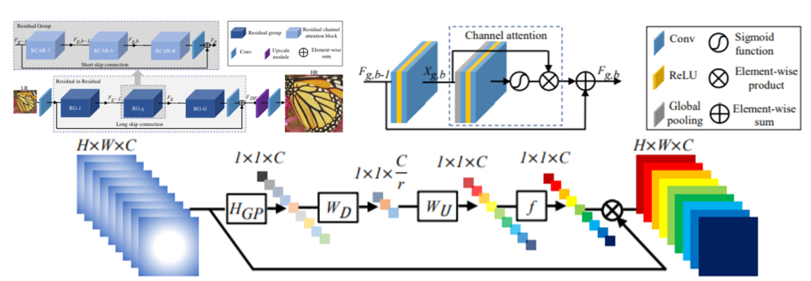
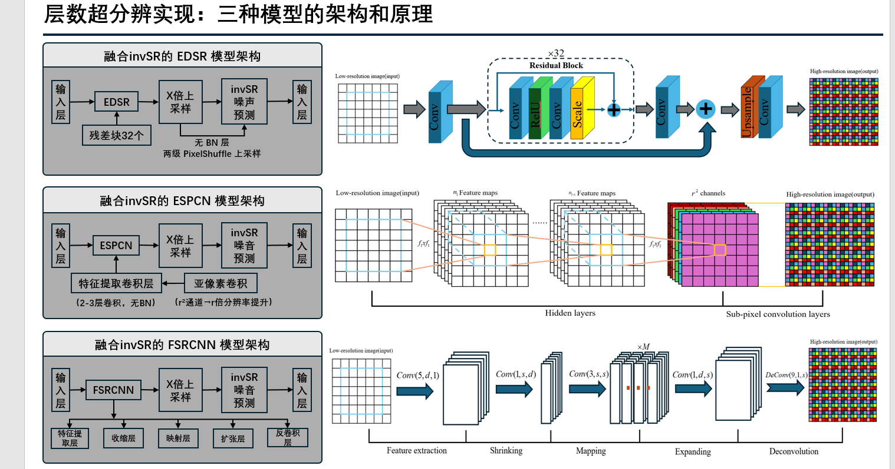
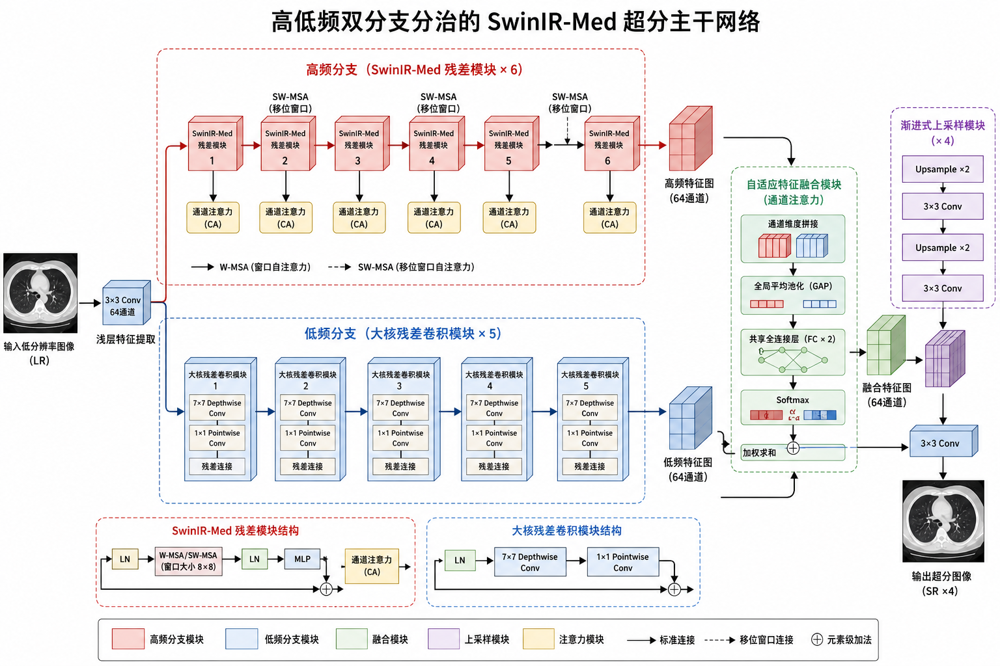
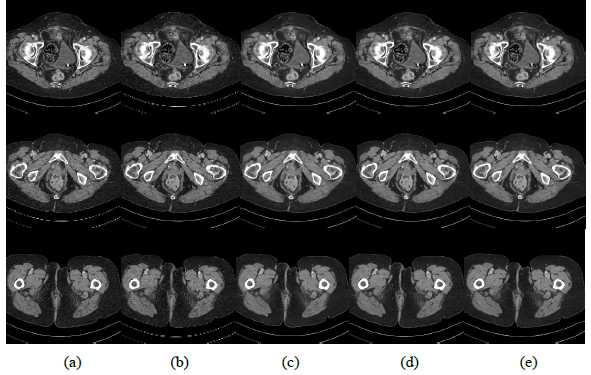
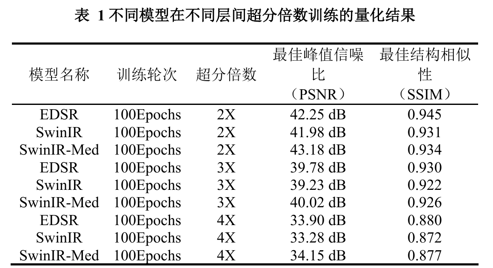
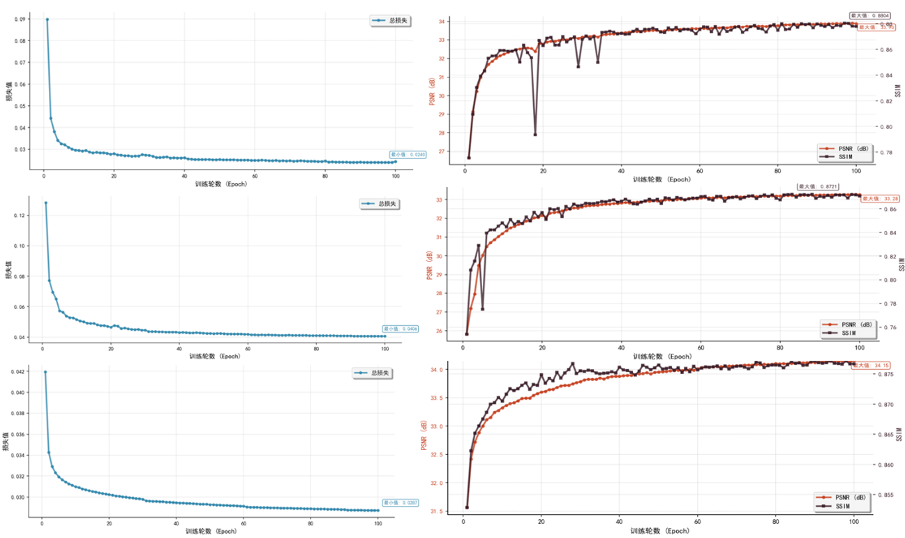
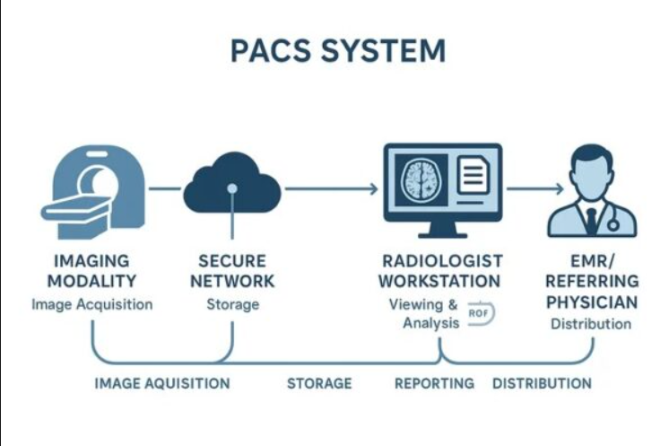

基于高低频分治 SwinIR-Med 的 CT 图像层间超分辨率重建
低剂量薄层 CT 是肺癌早筛的金标准，但薄层扫描面临辐射剂量与采集时间的矛盾，基层单位常仅能获得 5 mm 厚层 CT，层间分辨率不足导致微小结节漏诊。本项目提出高低频双分支分治的 SwinIR-Med 层间超分辨率研究方案：在频域分解厚层切片序列，低频分支恢复全局解剖结构、高频分支重建层间纹理， 再融合输出薄层级影像。当前工作站已提供2D 面内 4× 超分，层间重建仍处于研究与验证阶段。
背景与意义
肺结节早筛的现实矛盾
低剂量薄层 CT 是肺癌早筛的金标准，但薄层（亚毫米）扫描意味着更高的辐射剂量与更长的采集时间。 基层医疗机构受设备与算力限制，通常仅能产出 5 mm 厚层 CT，层间信息缺失使 ≤5 mm 的微小结节极易漏诊。
图像超分辨率（SR）旨在从低分辨率（LR）重建高分辨率（HR）。本项目关注的是 层间（through-plane） 超分——在相邻厚层切片之间“间插”出薄层，与传统的 面内（in-plane） 像素放大有本质区别：面内超分无法弥补层间缺失的解剖结构， 而层间超分直接恢复容积影像的纵向分辨率。
研究空白
通用超分方法在“实验室干净数据”上表现良好，却难以满足临床对解剖保真、低伪影、强泛化的严苛要求， 存在明显的“实验室—临床”鸿沟1。


技术基础
层间重建本质是“切片序列 ↔ 容积”的映射学习。我们沿用了从 CNN 到 Transformer 的超分范式，并将医学影像先验融入骨干网络；层间方向目前作为下一阶段研究路线推进。
EDSR / RCAN
残差与通道注意力结构大幅提升面内超分质量，是 SwinIR 的重要基线。
SwinIR
以 Swin Transformer 为骨干的图像复原网络，具备强大的长程依赖建模能力。
SwinIR-Med
面向 CT/MRI 改造，针对低剂量噪声与超分联合优化，贴合临床成像特性。
高低频双分支
在 SwinIR-Med 上引入频域分治，将层间细节与全局结构解耦建模。


核心方法：高低频双分支分治
层间超分的关键是同时恢复全局解剖结构与局部层间纹理。单一分支难以两全， 因此将厚层切片序列在频域分解，由两条异构分支分而治之。
低频分支
建模全局解剖结构与语义，保证器官边界、大血管等宏观形态正确无畸变。
高频分支
聚焦层间纹理、边缘与微小平面的细节重建，恢复薄层级的纵向分辨率。
两分支输出经融合模块合成薄层影像；频域分解模块以 FFT 实现可微分的高低频分离， 使分治策略端到端可训练。

技术路线
当前 2D ×4 基线
完成轴位切片面内重建，X/Y 分辨率提升，Z 方向保持不变。
配对数据准备
收集厚层 / 薄层配对 CT 体数据，构建层间研究样本。
频域分治原型
设计 FFT 分解与高低频双分支 SwinIR-Med 网络。
定量 + 阅片评测
以 PSNR / SSIM 与医师阅片验证纵向细节恢复。
部署集成
完成安全边界、临床工作流与离线工作站验证。
阶段性成果
下列图像包含研究中的层间路线与阶段性实验素材；当前可交付工作站能力仍以 2D 面内 4× 超分为准。指标应结合对应倍率、数据集与基线阅读。
| 模型 | 倍率 | PSNR | SSIM |
|---|---|---|---|
| EDSR | 4× | 33.90 dB | 0.880 |
| SwinIR | 4× | 33.28 dB | 0.872 |
| SwinIR-Med | 4× | 34.15 dB | 0.877 |
5.1 定性结果：重建图像对比

5.2 定量结果：不同超分倍率

5.3 训练过程

应用前景
- 当前工作流：桌面工作站支持 DICOM 查看与轴位切片的面内 4× 重建，适合在现有阅片流程中进行图像增强。
- 早筛研究：层间路线以恢复纵向信息、辅助微小肺结节研究为目标，临床价值仍需完整验证。
- 工作流兼容：以桌面离线工作站形式部署，可作为既有 PACS 阅片流程的前置研究工具；当前不新增 Z 方向切片。
- 可扩展：频域分治框架可迁移至 MRI 及其他模态的层间 / 面内超分。

获取与部署
桌面推理工作站
离线运行、免联网，可加载 DICOM 序列并对轴位切片执行面内超分。当前版本不增加 Z 方向帧数，适用于 Windows 64 位工作站。
脚注 · Notes
- 1 指通用超分辨率方法在受控实验数据上指标良好，但在真实临床采集的低剂量、高噪声 CT 上泛化不足的现象，详见图 2。